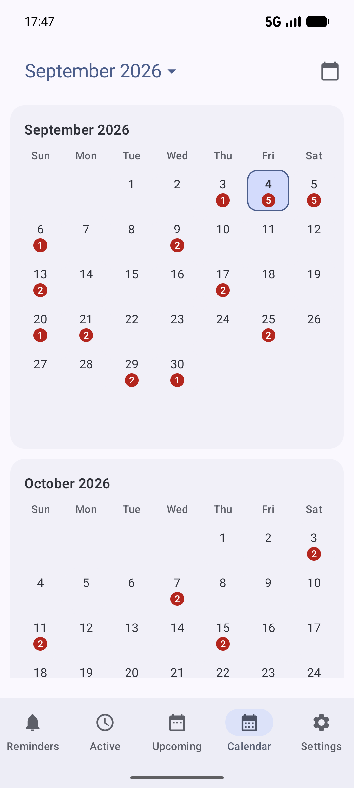

Огляд застосунку
Розумійте, що саме показує DKReminder.
DKReminder — менеджер нагадувань, а не список не пов’язаних будильників. Одне нагадування може створювати багато планових сигналів і зберігати спільну назву, розклад та налаштування.
Подивіться в застосунку
Оберіть розділ і подивіться, що в ньому є




Нагадування — це правило, сигнал — одна запланована подія
Зберігає назву, правило повторення, важливість, спосіб сповіщення, списки та інші параметри. Пауза або завершення впливають на створення майбутніх сигналів.
Одне конкретне повідомлення у запланований час. Дії «Готово» або «Відкласти» зазвичай стосуються цього сигналу, а не всього повторюваного нагадування.
Приклад: нагадування «Полити рослини» працює кожні три дні. Кожна запланована дата — окремий сигнал. Позначка «Готово» для сьогоднішнього сигналу не завершує повторюване нагадування.
П’ять основних розділів
Керуйте правилами нагадувань. Використовуйте вкладки «Активні» й «Завершені», відкривайте деталі, створюйте нові нагадування або переходьте до Кошика.
Обробляйте сигнали, які потребують уваги зараз, були відкладені або призупинені. Це конкретні сигнали, а не каталог усіх нагадувань.
Переглядайте основні, завчасні й відкладені вручну сигнали за часом їхнього наступного спрацювання: сьогодні, завтра або за сім днів.
Переходьте до будь-якого місяця, дивіться кількість правил нагадувань за днями й відкривайте день із минулими, поточними або розрахованими спрацюваннями.
Керуйте загальними значеннями, дозволами, способом створення, даними, мовою та доступом Pro.
Що показує розділ «Майбутні»
«Майбутні» — це розрахований прогноз основних, завчасних і відкладених вручну сигналів за часом, коли вони мають пролунати. Кожен запис показує назву нагадування, його групу за наявності, важливість і розрахований час. Натисніть запис, щоб відкрити відповідне нагадування або активне спрацювання.
Показує часи після поточного моменту й до кінця сьогоднішнього дня.
Показує лише наступний календарний день — від його початку до завершення.
Показує період від поточного моменту до такого самого часу через сім днів. Сюди входить решта сьогоднішнього дня й усі відповідні часи в межах цього періоду.
Якщо очікуваного часу немає
- Спочатку збережіть нагадування. Розділ «Майбутні» використовує збережений розклад, а не незбережені зміни в редакторі.
- Перевірте, чи нагадування активне. Призупинені, завершені й видалені нагадування сюди не потрапляють.
- Перевірте вибраний період, активне вікно, межу початку, дату завершення та обмеження кількості спрацювань. Кожен із цих параметрів може залишити наступний час поза списком.
- Якщо інтервал відраховується від вашої відповіді, DKReminder не може розрахувати наступний час, доки поточний сигнал чекає на вашу реакцію.
- Ручний денний цикл не має майбутніх часів, доки ви не запустите цикл на цей день.
- Для дуже частого нагадування розділ показує перші 100 розрахованих часів цього нагадування. Пізніші часи можуть не ввійти до прогнозу, навіть якщо вони припадають на найближчі сім днів.
Якщо розклад тут правильний, але справжній сигнал не з’являється, виконайте кроки з розділу Якщо сигнал не з’явився.
Що показує Календар
Календар розміщує спрацювання нагадувань за їхньою основною датою. Гортайте місяці, натисніть місяць і рік у верхній панелі для далекого переходу або скористайтеся дією Сьогодні, щоб повернутися до поточного місяця. Число на даті — це кількість різних правил нагадувань зі спрацюваннями цього дня.
- Відкрийте Календар і натисніть потрібну дату.
- У блоці Справи цього дня перегляньте основні спрацювання: фактичні записи для минулого, спільний огляд для сьогодні та розраховані спрацювання для майбутнього.
- У блоці Інші сигнали цього дня перегляньте завчасні та відкладені вручну сигнали, які мають пролунати цієї дати.
- Натисніть запис, щоб відкрити наявні деталі нагадування, деталі минулого спрацювання або активне повноекранне спрацювання — залежно від його стану.
Завершені нагадування, видалені нагадування й оброблені сигнали
Завершені нагадування
Відкрийте Нагадування → Завершені. Завершене нагадування більше не створює планових сигналів, але лишається доступним для перегляду. Дія Створити знову відкриває незалежну чернетку й не відновлює та не змінює архівний запис.
Кошик
Відкрийте Кошик з екрана нагадувань. Видалення переносить нагадування сюди, а не стирає його одразу. Після відновлення нагадування повертається на паузі, щоб ви перевірили розклад перед новим запуском.
Минулі сигнали в Календарі
Відкрийте відповідний минулий день у Календарі. Кожне фактичне спрацювання зберігає свій результат і знімок нагадування на той момент, тому старий запис лишається зрозумілим, навіть якщо початкове нагадування відредагували, завершили або перемістили в Кошик.
Куди перейти далі
- Щоб налаштувати розклад, відкрийте Створення й повторення.
- Щоб відповісти на сигнал або зрозуміти його стан, відкрийте Сигнали та дії.
- Якщо сигнал не з’явився, відкрийте Якщо сигнал не з’явився.
Не знайшли відповідь?
Напишіть на reminder@dvkworks.com і вкажіть, який розділ або елемент не можете знайти.